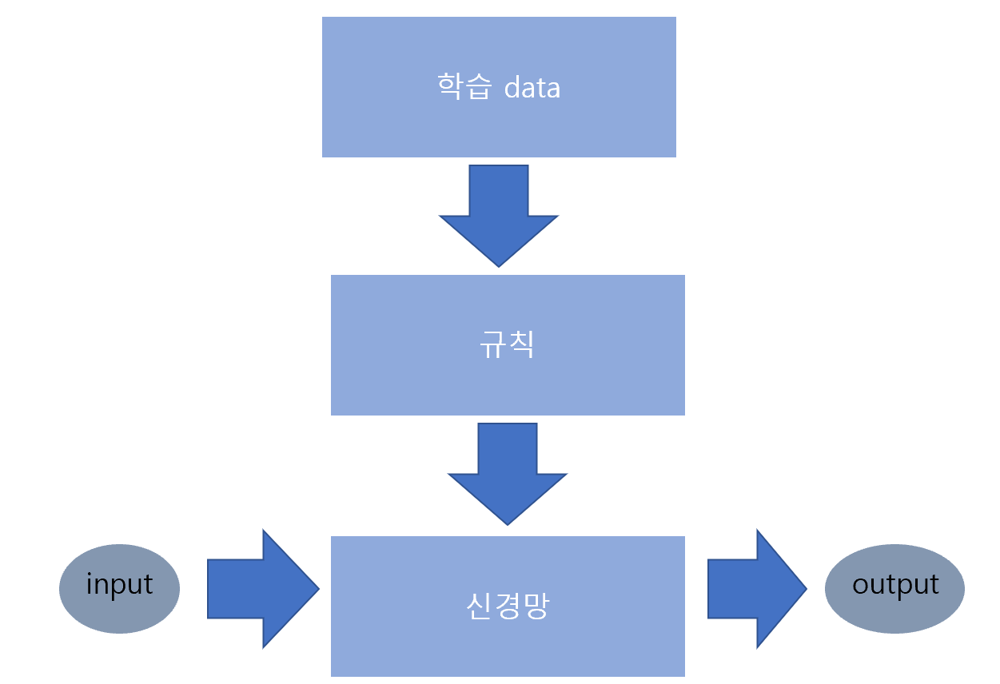
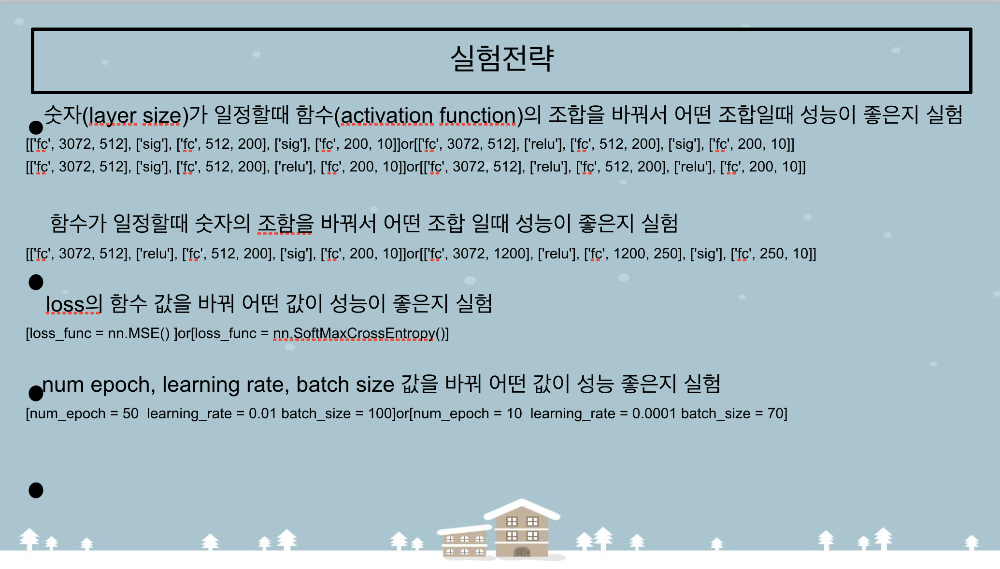

인공지능에 대한 설명은 1주차 4차산업혁명에 대하여를 참고하세요.
이 페이지에서는 인공지능이 어떻게 스스로 학습하는지, 즉 머신러닝과 딥러닝이 실행되는 방법에 대해 설명한다.
다음 그림은 인공지능, 머신러닝 그리고 딥러닝의 관계이다.
즉, 딥러닝은 머신러닝 위에 세워진 기술인데 따라서 딥러닝을 제대로 이해하려면 먼저 머신러닝에 대해서 이해해야 한다.
머신러닝이란 학습 데이터에서 모델을 찾아내는 귀납적인 방법이다.
이때 일반화(학습 데이터가 입력 데이터와 달라져도 성능 차이가 나지 않게 하는 것) 성능을
떨어트리는 주 중 하나가 overfitting이다.
overfitting이란 너무 섬세한 데이터로 인해 결과적인 부분에서 output을 저조하게 나타내는 것인테,
이 overfitting을 최소화 시키기 위해 검증을 쓴다.
검증은 성능검증용으로 결과를 보고 모델의 성능을 평가한 뒤 여러 번 수정하는 과정으로
대표적인 예로는 교차검증(cross validation)이 있다.
(아래 그림 참고)
다음으로 소개할 것은 인공 신경망이다.
신경망을 이용한 기법이 바로 딥러닝으로 딥러닝과 신경망은 떼어놓을 수 없는 관계이다.
신경망은 주로 뉴런 네트워크라 불리고 개념은 다음 그림과 같다.

신경망에는 단층 신경망과 다층 신경망이 있다.
딥러닝에는 다층 신경망이 쓰인다. 다층 신경망은 델타 규칙을 사용하지 못하기 때문에 역전파 알고리즘이라는 학습 규칙을 사용한다.
(이때 델타 규칙이란 반복 작업을 통해 정답을 단계적으로 찾아가는 방법이다.)
역전파 알고리즘이란 오차를 역으로 넣어서 계산을 하여 오차의 정의를 내는 것이다. 이를 반복하면 선형 분리 불가능 문제도 가능하다고 한다.
마지막으로 딥러닝은 심층신경망(=다층신경망)을 이용한 머신러닝이다.
(이때 심층신경망은 은닉층을 2개이상 사용한 신경망을 말한다.)
딥러닝의 개념은 다음과 같다.
다음 그림은 딥러닝의 입력층, 은닉층(중간층),출력층의 구성이다.
딥러닝은 은닉층이 많을수록 성능이 낮아진다.
따라서 함수 Relu 또는 Cross Gutory를 사용하고,
앞에서 언급했던 overfitting이 과적합을 줄이며,
과도한 계산을 줄이는 것이 성능 개선에 좋다.
인공지능 학습 프로그램을 직접 짜보고 싶은 분은 아래를 참고하세요.
활용 프로그램 : Anaconda-Navigator,spyder
